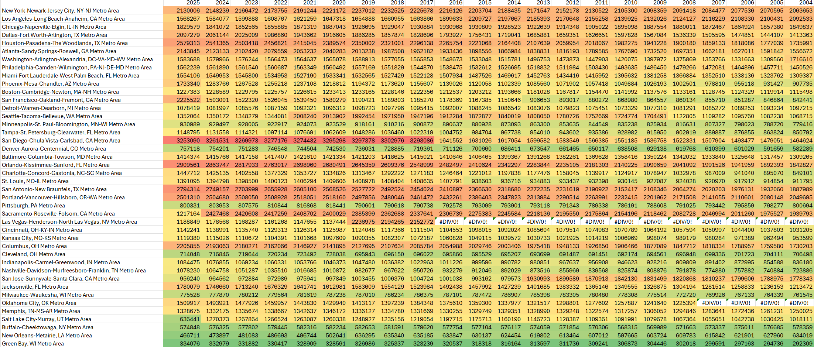
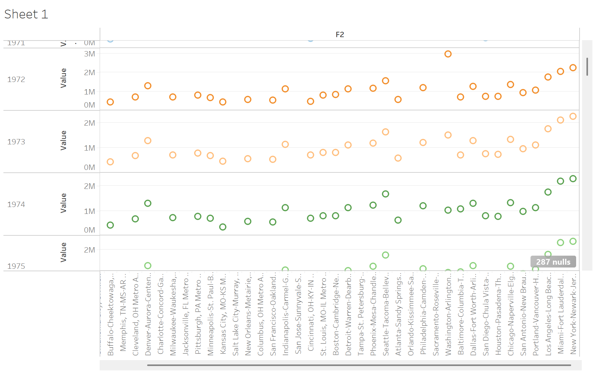
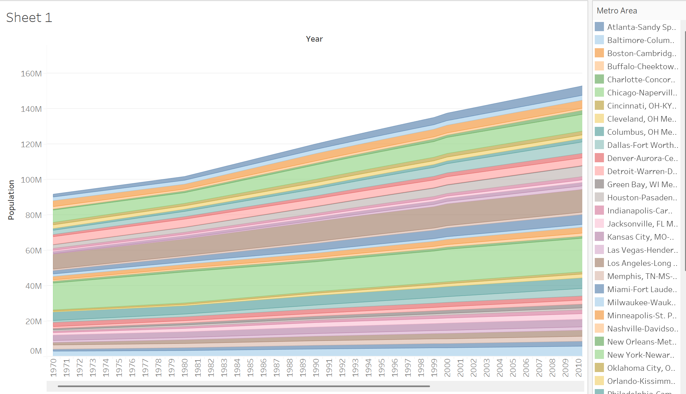

Technologies Used
Python

Tableau

Excel
A data study of which city's sports fans have been starved and which have been overfed.
Fanfare explores the disparity between the success of sports teams and the population sizes of the Metropolitan Statistical Areas (MSAs) they represent. It highlights which cities have been starved of championship-caliber teams and which have been overindulged, considering the potential fanbase based on MSA population data. Currently in its early stages, the project includes population data for all 43 U.S. cities with professional sports teams. It also tracks the number of teams each MSA has had each year since 1970. This data helps visualize which cities have more teams than expected or fewer, based on the population size that could support stadium attendance. The next step is to incorporate wins and yearly ELO ratings, providing a deeper look at which fanbases have celebrated championship success and which have endured years of underperformance.

A preliminary heatmap detailing the population per team in MSAs the last 20 years. Showing Green Bay has consistently had more teams than their population expects while San Diego has suffered with a single team for their much larger population.

A preliminary tableau chart detailing the population per team over a 3 year span in the 70s.

Growth in Fanbase Over Time: Analysis of urban growth in MSAs with a professional sports Team.
Python
Tableau
Excel
Feel free to connect with me on LinkedIn or send me an email if you'd like to know more!